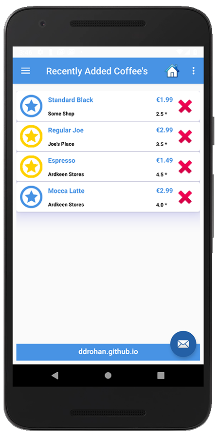
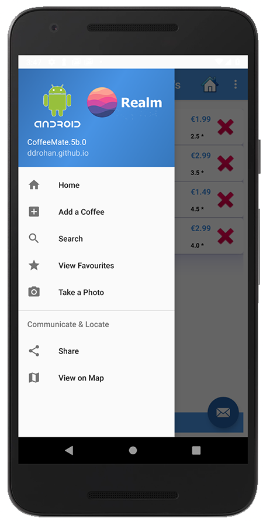

This lab continues our Case Study CoffeeMate and implements persistence (through a Realm Database) in an Android App.
We'll use similar starter code as we did for the SQLite Lab, which you can download here CoffeeMate.5b.0.Starter.
In this lab, you are required to do the following:
The following steps will guide you through these requirements, but first you'll need to add a helper class to make this lab a bit easier.
Go ahead and add the following dependency to your project/build.gradle
classpath "io.realm:realm-gradle-plugin:5.8.0"and this to your app/build.gradle (at the top)
apply plugin: 'realm-android'and then this in the dependencies (which we'll be using later)
implementation 'io.realm:android-adapters:2.1.1'Next, update your Coffee class with the following
public class Coffee extends RealmObject
{
@PrimaryKey
public String coffeeId;
public String name;
public String shop;
public double rating;
public double price;
public boolean favourite;
public Coffee() {}
public Coffee(String name, String shop, double rating, double price, boolean fav)
{
this.coffeeId = UUID.randomUUID().toString();
this.name = name;
this.shop = shop;
this.rating = rating;
this.price = price;
this.favourite = fav;
}
@Override
public String toString() {
return "Coffee [name=" + name
+ ", shop =" + shop + ", rating=" + rating + ", price=" + price
+ ", fav =" + favourite + "]";
}
}and finally add the following class to a new ie.cm.db package (like you did in the previous lab)
public class DBManager {
public Realm realmDatabase;
public DBManager(Context context) {
Realm.init(context);
RealmConfiguration config = new RealmConfiguration.Builder()
.name("coffees.realm")
.schemaVersion(1)
.build();
Realm.setDefaultConfiguration(config);
}
public void open() throws SQLException {
realmDatabase = Realm.getDefaultInstance();
}
public void close() {
realmDatabase.close();
}
public void add(Coffee c) {
realmDatabase.beginTransaction();
realmDatabase.copyToRealm(c);
realmDatabase.commitTransaction();
}
public void update(Coffee c, String name ,String shop, double price , double rating)
{
realmDatabase.beginTransaction();
c.name = name;
c.shop = shop;
c.price = price;
c.rating = rating;
realmDatabase.commitTransaction();
}
public void setFavourite(Coffee c, boolean value)
{
realmDatabase.beginTransaction();
c.favourite = value;
realmDatabase.commitTransaction();
}
// If we wanted to update individual fields we could
// do something like this, for example
public void updateName(String name, String coffeeId)
{
Coffee c = realmDatabase.where(Coffee.class)
.equalTo("coffeeId",coffeeId)
.findFirst();
realmDatabase.beginTransaction();
c.name = name;
realmDatabase.commitTransaction();
}
public void delete(String coffeeId) {
realmDatabase.beginTransaction();
realmDatabase.where(Coffee.class)
.equalTo("coffeeId",coffeeId)
.findAll()
.deleteAllFromRealm();
realmDatabase.commitTransaction();
}
public RealmResults<Coffee> getAll() {
RealmResults<Coffee> result = realmDatabase.where(Coffee.class)
.findAll();
return result;
}
public RealmResults<Coffee> getFavourites() {
return realmDatabase.where(Coffee.class)
.equalTo("favourite",true)
.findAll();
}
public Coffee get(String coffeeId) {
return realmDatabase.where(Coffee.class)
.equalTo("coffeeId",coffeeId)
.findAll()
.first();
}
public void reset() {
realmDatabase.beginTransaction();
realmDatabase.where(Coffee.class)
.findAll()
.deleteAllFromRealm();
realmDatabase.commitTransaction();
}
}There'll be a few import errors to fix, but that's about it for the setup.
Take a few moments to investigate the class and familiarise yourself with the methods you'll be using. There are a number of classes you'll need to modify to add database support to your project.
Once you've completed the setup, similar to the previous step, this step is also relatively straight forward - all you have to do is replace the method calls that manages the coffeeList with the respective dbManager Realm calls.
The first thing you need to do is create an instance of DBManager in CofeeMateApp.java and both open/close the database when necessary.
Our DBManager instance inside our Application Object should now look like this :
public class CoffeeMateApp extends Application {
//public List <Coffee> coffeeList = new ArrayList<Coffee>();
public DBManager dbManager = new DBManager(this);
@Override
public void onCreate()
{
super.onCreate();
Log.v("coffeemate", "CoffeeMate App Started");
dbManager.open();
}
@Override
public void onTerminate()
{
super.onTerminate();
dbManager.close();
}
}Once you make this change (and build the project) you'll get a number of errors, which actually indicates which classes you need to now update and add the database calls (and remove the coffeeList calls). Each error requires only one line of code to be fixed, so have a go and updating each of the classes (and we'll have a look at the solution at the end of the Practical Lab).
Once you fix all the errors, and run the app again, you should see your coffee list - but this time those coffees are stored in a Realm database.
And as a final check, if you call the setupCoffees() method of the DBManager reference in your CoffeeMateApp reference 'app' (replacing the existing setup method in 'Home') you should see the something like the following list:

and if you choose the menu (assuming you've downloaded the starter code)

If you've carried out any kind of testing at all, you'll see that the app crashes on 'View Favourites', this is due to the fact that we are now using Realm objects and our CoffeeFilter expects to filter on List objects.
To rectify this, replace your existing CoffeeFilter with the following (fix any import errors) and test again.
public class CoffeeFilter extends Filter {
private OrderedRealmCollection<Coffee> originalCoffeeList;
private RealmResults<Coffee> realmCoffeResults;
private CoffeeListAdapter adapter;
private boolean favourites = false;
private DBManager dbManager;
public CoffeeFilter(DBManager dbManager, CoffeeListAdapter adapter) {
super();
this.dbManager = dbManager;
this.originalCoffeeList = dbManager.getAll();
this.adapter = adapter;
}
public void setFilter(String filterText) {
//favourites = filterText.equals("all") ? false : true;
favourites = !filterText.equals("all");
}
@Override
protected FilterResults performFiltering(CharSequence prefix) {
return new FilterResults();
}
@Override
protected void publishResults(CharSequence prefix, FilterResults results) {
if ((prefix == null || prefix.length() == 0))
if(!favourites)
realmCoffeResults = dbManager.getAll();
else
realmCoffeResults = dbManager.getFavourites();
else {
realmCoffeResults = dbManager.realmDatabase
.where(Coffee.class)
.equalTo("favourite", favourites)
.contains("name", prefix.toString(), Case.INSENSITIVE)
.or()
.contains("shop", prefix.toString(), Case.INSENSITIVE)
.findAll();
}
adapter.coffeeList = realmCoffeResults;
if (adapter.coffeeList.size() > 0)
adapter.notifyDataSetChanged();
else {
adapter.notifyDataSetInvalidated();
adapter.coffeeList = originalCoffeeList;
}
}
}After some more testing you may also find that your adapter isn't functioning as expected in certain circumstances when deleting multiple coffees. This is due to the fact that our data is now persistent, so depending on 'where you are', so to speak, some slight refactoring of our deleteCoffees() is required, like so
public void deleteCoffees(ActionMode actionMode)
{
Coffee c = null;
for (int i = listAdapter.getCount() - 1; i >= 0; i--)
if (listView.isItemChecked(i))
activity.app.dbManager.delete(listAdapter.getItem(i).coffeeId); //delete from DB
actionMode.finish();
if (favourites) {
//Update the filters data
coffeeFilter = new CoffeeFilter(activity.app.dbManager,listAdapter);
coffeeFilter.setFilter("favourites");
coffeeFilter.filter(null);
}
listAdapter.notifyDataSetChanged();
}Just for completeness, and to keep thing in sync with the previous lab, if you experience any rendering issues with your fragment, move
listAdapter = new CoffeeListAdapter(activity, this, activity.app.dbManager.getAll());
coffeeFilter = new CoffeeFilter(activity.app.dbManager.getAll(),"all",listAdapter);from the onCreate() method to the onCreateView() method and make sure you call
super.onCreateView(inflater,container,savedInstanceState);in the subclass SearchFragment method, to avoid a NullPointerException on setting the filter.
Test again to confirm and go have a coffee!
Well Done!